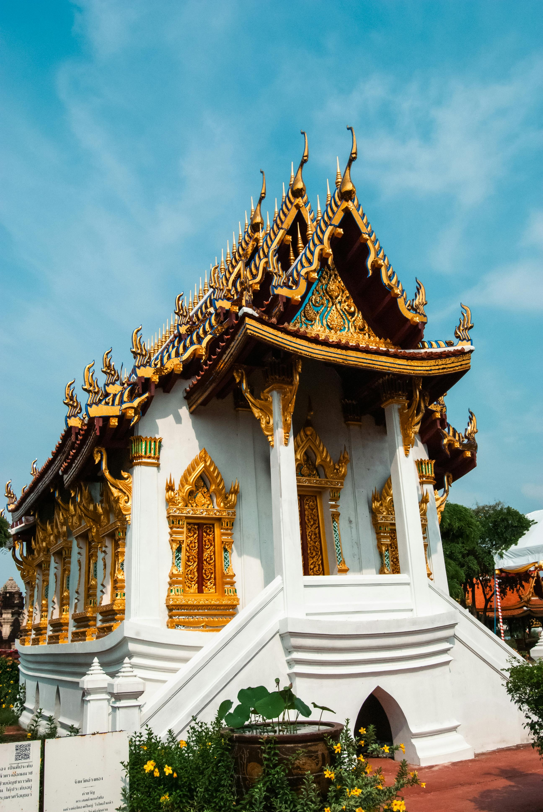
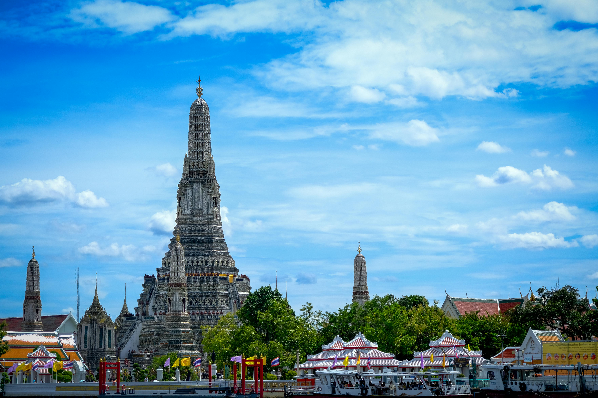

<!DOCTYPE html>
<html lang="en">
<head>
    <meta charset="UTF-8">
    <meta name="viewport" content="width=device-width, initial-scale=1.0">
    <title>Document</title>
</head>
<body>
    
</body>
</html>
<li>泰國旻谷</li>
                
                <li>地點:泰國曼谷拍那空縣</li>
                <li>交通:前往大皇宮，可選擇以下幾種交通方式：

                    渡輪：從碼頭搭乘昭披耶河遊船至踏天碼頭（Tha Tian, N8）。下船後，往右步行約5分鐘可抵達大皇宮正門。若要前往臥佛寺，繼續沿著皇宮外圍步行約10分鐘即達。
                    公共巴士：搭乘搭乘1, 3, 9, 15, 25, 30, 32, 33, 43, 44, 47, 53, 59, 64, 80, 82, 91, 203, 503, 508, 512大路皇車地點均可到達大皇宮站下車。
                    BTS：在Saphan Taksin站下車，再轉乘渡輪或步行約15分鐘到達。
                    MRT：在Sanam Chai站下車，1號出口後搭乘公車3, 9, 44, 47, 53 或82 路前往
                <li>歴史:是泰國扎克里王朝最早建成的王宮，位於曼谷拍那空縣，自1782年以來，一直是泰國（暹羅）王室的公定居住地點</li>    
                
                <li>交通:搭乘昭披耶河渡輪前往，在Tha Tian碼頭（N8）下船；或是搭捷運 MRT 線至 Itsaraphap 站1號出口出站，沿著 Itsaraphap 路前行，遇到 Thanon Wang Doem 路右轉，走到底後左轉直行，遇到右邊第一條巷子轉進去就是鄭王廟囉，步行約 12 分鐘</li>
                <li>地點:158 Thanon Wang Doem, Wat Arun, Bangkok Yai, Bangkok 10600</li>
                <li>歷史:黎明寺始建於大城王朝時期，吞武里王朝鄭昭王在寺旁興建王宮，並且將該寺定為王家佛寺</li>
                
                <li>地址：QF2V+M34, Na Phra Lan Rd, Phra Borom Maha Ratchawang, Phra Nakhon, Bangkok 10200泰國</li>
                <li>交通:曼谷玉佛寺交通｜空鐵BTS+渡輪
                    搭乘曼谷空鐵BTS至Saphan Taksin站，從2號出口出來至Sathorn碼頭搭乘昭披耶河快船至N9(Tha Chang)碼頭，下船後步行約5分鐘即可抵達。
                    曼谷玉佛寺交通｜地鐵MRT+計程車等
                    搭乘曼谷地鐵至Sanam Chai 站1號出口，從1號出口轉乘公車或搭乘計程車、嘟嘟車路前往，若採步行，大約20分鐘可抵達。</li>
                <li>歷史:玉佛寺始建於1783年，由扎克里王朝的開國君主拉瑪一世下令修建，之後又經歷代國王修葺增建，匯集了多種泰國傳統宗教建築風格，可謂集泰國宗教文化與建築藝術之大成。</li>

             <li>其他景點</li>   
             
             <li>地點: 2 Sanam Chai Rd, Phra Borom Maha Ratchawang, Phra Nakhon, Bangkok 10200泰國</li>
             <li>交通搭乘BTS至Saphan Taksin站，出站後直直走就會到搭船的中央碼頭。直接搭橘旗船到N8碼頭(船票價1趟$15泰銖)，下船即可步行至臥佛寺。</li>
             <li>歷史:曼谷臥佛寺最早建於1788年，是曼谷最古老寺廟之一，院內供奉1000多尊佛像，最重要的是有泰國最大室內釋迦牟尼臥佛像，法相莊嚴金光閃閃，雖然參觀的遊客很多，卻依舊可以感受到廟宇沉穩與莊重的氣息，因為距離大皇宮和玉佛寺並不遠，可以慢慢走過來</li>
             
                
                